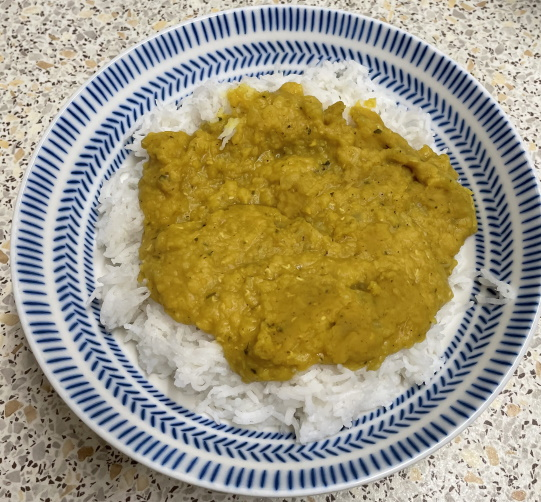
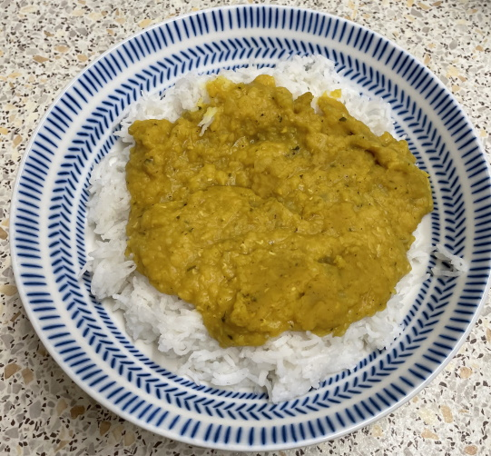

Daal
- Cook for 30 mins stirring regularly
- 1 onion
- 3 cloves garlic
- 1 tbsp chopped ginger
- 1 tsp curry powder
- 1 tsp cumin
- 1 tsp tumeric
- 500g red lentils
- bunch chopped fresh coriander (or 2 tsp dried coriander leaves)
- 1.4l vegetable stock
- Remove from heat and stir in lemon juice to taste
Notes
- Use half chicken stock
- Do not need a lot of heat, red lentils easily cook to mush
- Water increased from 1.25l
- Best served with flatbread and chutney
 
